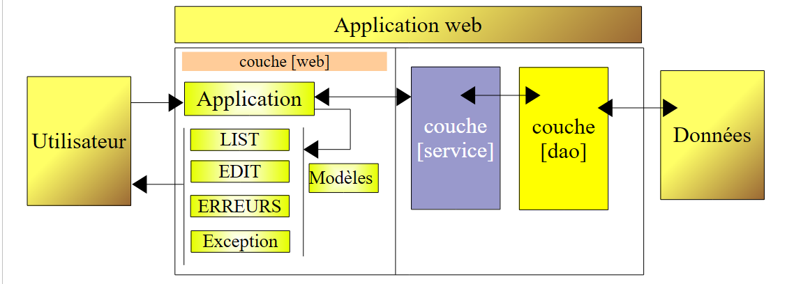
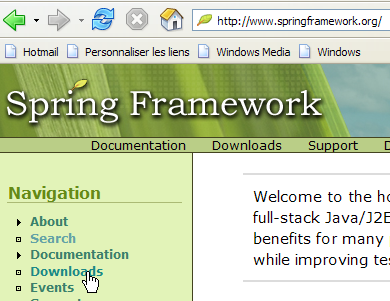
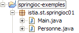
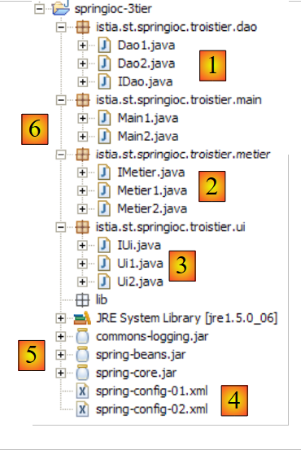

15. Spring IoC
15.1. 简介
我们将探索 Spring 框架（http://www.springframework.org）的配置和集成可能性，并定义和使用 IoC（控制反转）的概念，也称为依赖注入（Dependency Injection）
让我们以刚刚构建的三层应用程序为例：
 |
为了响应用户请求，控制器 [Application] 必须与 [service] 层进行交互。在本例中，该层是一个 [DaoImpl] 类型的实例。 控制器 [Application] 在其方法 [init] 中获取了 [service] 层的引用（参见第 14.8.3 节）：
- 第 6 行：通过显式创建 [DaoImpl] 实例，实例化了 [dao] 层
- 第 9 行：通过显式创建 [ServiceImpl] 实例，实例化了 [service] 层
需要说明的是，类 [DaoImpl] 和 [ServiceImpl] 分别实现了接口 [IDao] 和 [IService]。 在未来的版本中，接口 [IDao] 将由一个管理数据库中人员列表的类来实现。为了便于说明，我们暂且将该类命名为 [DaoBD]。 将 [dao] 层的 [DaoImpl] 实现替换为 [DaoBD] 实现，将需要重新编译 [web] 层。 因为上文第 6 行原本使用类型 [DaoImpl] 实例化 [dao] 层，现在必须改用类型 [DaoBD] 进行实例化。 因此，我们的 [web] 层依赖于 [dao] 层。上文第 9 行显示，它还依赖于 [service] 层。
Spring IoC 将使我们能够创建一个三层应用程序，其中各层彼此独立，即 c.a.d。这意味着修改其中一层无需修改其他层。这为应用程序的演进带来了极大的灵活性。
原有的架构将按以下方式演进：
 |
借助 [Spring IoC]，控制器 [Application] 将通过以下方式从 [service] 层获取所需的引用：
- 在其 [init] 方法中，它将请求 [Spring IoC] 层提供 [service] 层的引用
- 随后，[Spring IoC] 将利用配置文件 XML，该文件指定了应实例化的类以及其初始化方式。
- [Spring IoC] 将已创建的 [service] 层的引用返回给控制器 [Application]。
该方案的优势在于，实例化各层的类名不再硬编码在控制器方法 [init] 中，而是仅存在于配置文件中。更改某层的实现将导致该配置文件发生变更，但控制器本身无需修改。
现在让我们通过示例来介绍 [Spring IoC] 的功能。
15.2. Spring IoC 实战指南
15.2.1. Spring
[Spring IoC] 是更大项目的一部分，该项目可通过网址 [http://www.springframework.org/]（2006年5月）访问：
 |  |
 |
- [1]：Spring 使用了多种第三方技术，此处称为 dépendances。必须下载包含 dépendances 的版本，以避免后续被迫下载第三方工具的库。
- [2]：下载的压缩文件目录结构
- [3]：[Spring]、c.a.d发行版。Spring项目本身的.jar归档文件，不含其依赖项。 Spring 的 [IoC] 组件由 [spring-core.jar, spring-beans.jar] 归档包提供。
- [4,5]：第三方工具的归档文件
15.2.2. 示例的 Eclipse 项目
我们将构建三个示例来演示 Spring IoC 的使用。它们都将位于以下 Eclipse 项目中：

项目 [springioc-exemples] 已配置为将源文件和编译后的类放置在项目文件夹的根目录下：
 |
- [1]：项目文件夹的目录结构[Eclipse]
- [2]：Spring 配置文件位于项目根目录下，即应用程序的 Classpath 目录中
- [3]：示例 1 的类
- [4]：示例 2 的类
- [5]：示例3中的类
- [6]： [spring-core.jar, spring-beans.jar] 项目的库位于 Spring 发行版的 [dist] 文件夹中，而 [commons-logging.jar] 位于 [lib/jakarta-commons] 文件夹中。 这三个归档文件已包含在应用程序的 Classpath 中。
15.2.3. 示例 1
示例 1 中的元素已放置在项目的 [springioc01] 包中：

类 [Personne] 如下所示：
该类包含：
- 第 6-7 行：两个私有字段 nom 和 age
- 第23-38行：这两个字段的读取（get）和写入（set）方法
- 第 10-12 行：一个名为 toString 的方法，用于将 [Personne] 对象的值以字符串形式返回
- 第 15-21 行：一个 init 方法，将在 Spring 创建对象时被调用；一个 close 方法，将在对象销毁时被调用
若要使用 Spring 实例化 [Personne] 类型的对象，我们将使用以下 [spring-config-01.xml] 文件：
<?xml version="1.0" encoding="UTF-8"?>
<!DOCTYPE beans PUBLIC "-//SPRING//DTD BEAN//EN" "http://www.springframework.org/dtd/spring-beans.dtd">
<beans>
<bean id="personne1" class="istia.st.springioc01.Personne" init-method="init" destroy-method="close">
<property name="nom" value="Simon" />
<property name="age" value="40" />
</bean>
<bean id="personne2" class="istia.st.springioc01.Personne" init-method="init" destroy-method="close">
<property name="nom" value="Brigitte" />
<property name="age" value="20" />
</bean>
</beans>
- 第 3、12 行：<beans> 标签是 Spring 配置文件的根标签。在此标签内，<bean> 标签用于定义要创建的各个对象。
- 第 4-7 行：定义一个 Bean
- 第 4 行：该 Bean 名为 [personne1]（属性 id），是类 [istia.st.springioc01.Personne]（属性 class）的一个实例。 该实例创建后将调用其 [init] 方法（属性 init-method），并在销毁前调用其 [close] 方法 （属性 destroy-method）。
- 第 5 行：定义了创建的 [Personne] 实例的 [nom] 属性（属性 name）的值。 为了进行此初始化，Spring 将使用方法 [setNom]。因此该方法必须存在。此处即为如此。
- 第 6 行：[age] 属性亦同。
- 第 8-11 行：对名为 [personne2] 的 Bean 进行了类似的定义
测试类 [Main] 如下：
注释：
- 第 10 行：为了获取在文件 [spring-config-01.xml] 中定义的 Bean，我们使用了一个类型为 [XmlBeanFactory] 的对象，该对象可用于实例化在文件 XML 中定义的 Bean。 文件 [spring-config-01.xml] 将被放置在应用程序 [ClassPath] 的 c.a.d 中，该文件位于 Java 虚拟机在搜索应用程序引用的类时所遍历的目录之一中。 对象 [ClassPathResource] 用于在应用程序的 [ClassPath] 中查找资源，此处即文件 [spring-config-01.xml]。 通过 [bf] 对象（Bean Factory），可以使用 bf.getBean("XX") 语句获取名为 "XX" 的 Bean 的引用。
- 第 12 行：在文件 [spring-config-01.xml] 中请求名为 [personne1] 的 Bean 的引用。
- 第 13 行：显示对应对象 [Personne] 的值。
- 第 15-16 行：对名为 [personne2] 的 Bean 执行相同操作。
- 第 18-19 行：重新请求名为 [personne2] 的 Bean。
- 第 21 行：删除所有名为 [bf] 和 c.a.d 的 Bean，以及由文件 [spring-config-01.xml] 创建的 Bean。
执行类 [Main] 得到以下结果：
注释：
- 第 1 行是通过执行 [Main] 的第 12 行获得的。操作
操作强制创建了 Bean [personne1]。 由于在 Bean [personne1] 的定义中写的是 [init-method="init"]，因此执行了所创建的对象 [Personne] 的方法 [init]。并显示了相应的消息。
- 第 2 行：[Main] 的第 13 行显示了所创建的 [Personne] 对象的值。
- 第 3-4 行：名为 [personne2] 的 Bean 也出现了相同的情况。
- 第 5 行：[Main] 的第 18-19 行操作
personne2 = (Personne) bf.getBean("personne2");
System.out.println("personne2=" + personne2.toString());
并未导致创建新的 [Personne] 类型对象。如果确实如此，本应显示 [init] 方法。这就是单例模式的原理。Spring 默认情况下，仅会创建配置文件中 Bean 的一个实例。 这是一个对象引用服务。如果请求一个尚未创建的对象的引用，它会创建该对象并返回一个引用。如果对象已经创建，Spring 仅返回该对象的引用。此处由于 [personne2] 已被创建，Spring 仅返回其引用。
- 第6-7行的输出是由[Main]的第21行触发的，该行要求销毁所有由对象[XmlBeanFactory bf]引用的Bean，即Bean [personne1, personne2]。 由于这两个 Bean 都拥有 [destroy-method="close"] 属性，因此这两个 Bean 的 [close] 方法被执行，从而导致第 6-7 行被输出。
既然已经掌握了 Spring 配置的基础知识，接下来的讲解将会更加简洁明了。
15.2.4. 示例 2
示例 2 的组件位于项目中的 [springioc02] 包内：

首先通过复制/粘贴 [springioc01] 包来获取 [springioc02] 包，然后向其中添加类 [Voiture]，并根据新示例调整类 [Main]。
[Voiture]类如下：
该类包含：
- 第5-7行：三个私有字段type、make和owner。这些字段可以通过第26-48行中Bean的get和set公共方法进行初始化和读取。它们也可以通过第13-17行定义的构造函数Voiture(String, String, Personne)进行初始化。 该类还提供了一个无参构造函数，以符合 JavaBean 标准。
- 第20-23行：一个toString方法，用于以字符串形式获取[Voiture]对象的值
- 第 51-57 行：一个 init 方法，将在对象创建后立即由 Spring 调用；一个 close 方法，将在对象销毁时被调用
要创建 [Voiture] 类型的对象，我们将使用以下 Spring 文件 [spring-config-02.xml]：
<?xml version="1.0" encoding="UTF-8"?>
<!DOCTYPE beans PUBLIC "-//SPRING//DTD BEAN//EN" "http://www.springframework.org/dtd/spring-beans.dtd">
<beans>
<bean id="personne1" class="istia.st.springioc02.Personne" init-method="init" destroy-method="close">
<property name="nom" value="Simon" />
<property name="age" value="40" />
</bean>
<bean id="personne2" class="istia.st.springioc02.Personne" init-method="init" destroy-method="close">
<property name="nom" value="Brigitte" />
<property name="age" value="20" />
</bean>
<bean id="voiture1" class="istia.st.springioc02.Voiture" init-method="init" destroy-method="close">
<constructor-arg index="0" value="Peugeot" />
<constructor-arg index="1" value="307" />
<constructor-arg index="2">
<ref local="personne2" />
</constructor-arg>
</bean>
</beans>
该文件在 [spring-config-01.xml] 中定义的 Bean 基础上，新增了一个键为 "voiture1"、类型为 [Voiture] 的 Bean（第 12-17 行）。要初始化该 Bean，我们可以这样编写：
与其采用示例 1 中已介绍的方法，我们在此选择使用该类的构造函数 Voiture(String, String, Personne)。
- 第 12 行：定义 Bean 的名称、所属类、实例化后要执行的方法，以及销毁后要执行的方法。
- 第 13 行：构造函数 [Voiture(String, String, Personne)] 的第一个参数值。
- 第 14 行：构造函数 [Voiture(String, String, Personne)] 的第二个参数值。
- 第 15-17 行：构造函数 [Voiture(String, String, Personne)] 的第三个参数值。该参数的类型为 [Personne]。 其值为同一文件中定义的 Bean [personne2] 的引用（标签 ref）（属性 local）。
在测试中，我们将使用以下 [Main] 类：
方法 [main] 请求 Bean [voiture1] 的引用（第 12 行）并将其显示出来（第 13 行）。结果如下：
注释：
- 方法 [main] 请求对 Bean [voiture1] 的引用（第 12 行）。由于 Bean [voiture1] 尚未创建（单例），Spring 开始创建该 Bean。 由于 Bean [voiture1] 引用了 Bean [personne2]，因此后者也被构建。Bean [personne2] 已被创建。 随后执行其方法 [init]（结果中的第 1 行）。接着实例化 Bean [voiture1]。随后执行其方法 [init]（结果中的第 2 行）。
- 结果中的第 3 行来自 [main] 的第 13 行：显示了 Bean [voiture1] 的值。
- [main] 的第 15 行要求销毁所有现有 Bean，这导致结果中的第 4 行和第 5 行被显示。
15.2.5. 示例 3
示例 3 的元素位于项目中的 [springioc03] 包内：

首先通过复制/粘贴 [springioc01] 包来获取 [springioc03] 包，然后向其中添加类 [GroupePersonnes]， 删除类[Voiture]，并将类[Main]调整为适应新示例。
类[GroupePersonnes]如下：
其两个私有成员为：
第 8 行：members：一个包含该组成员的数组
第 9 行：groupesDeTravail：一个将人员分配到工作组的字典
需要注意的是，类 [GroupePersonnes] 未定义无参构造器。需要提醒的是，如果完全没有构造器，则存在一个“默认”构造器，即无参构造器，它不执行任何操作。
此处旨在展示 Spring 如何初始化复杂对象，例如包含数组或字典类型字段的对象。示例 3 中的 Bean 文件 [spring-config-03.xml] 如下：
<?xml version="1.0" encoding="UTF-8"?>
<!DOCTYPE beans PUBLIC "-//SPRING//DTD BEAN//EN" "http://www.springframework.org/dtd/spring-beans.dtd">
<beans>
<bean id="personne1" class="istia.st.springioc03.Personne" init-method="init" destroy-method="close">
<property name="nom" value="Simon" />
<property name="age" value="40" />
</bean>
<bean id="personne2" class="istia.st.springioc03.Personne" init-method="init" destroy-method="close">
<property name="nom" value="Brigitte" />
<property name="age" value="20" />
</bean>
<bean id="groupe1" class="istia.st.springioc03.GroupePersonnes" init-method="init" destroy-method="close">
<property name="membres">
<list>
<ref local="personne1" />
<ref local="personne2" />
</list>
</property>
<property name="groupesDeTravail">
<map>
<entry key="Brigitte" value="Marketing" />
<entry key="Simon" value="Ressources humaines" />
</map>
</property>
</bean>
</beans>
- 第 14-17 行：<list> 标签可用于为数组类型或实现 List 接口的字段初始化不同值。
- 第 20-23 行：<map> 标签可用于对实现 Map 接口的字段执行相同操作。
在测试中，我们将使用以下类 [Main]：
- 第 12-13 行：向 Spring 请求 [groupe1] Bean 的引用，并显示其值。
所得结果如下：
注释：
- 在 [Main] 的第 12 行，请求获取 Bean [groupe1] 的引用。 Spring 开始创建该 Bean。由于 Bean [groupe1] 引用了 Bean [personne1] 和 [personne2]，因此结果中的这两行（第 1 行和第 2 行）会创建这两个 Bean。 随后实例化了 bean [groupe1]，并执行了其方法 [init]（结果中的第 3 行）。
- [Main] 的第 13 行显示了结果的第 4 行。
- [Main] 的第 15 行显示了结果集的第 5-7 行。
15.3. 使用 Spring 配置多层应用
假设有一个具有以下结构的三层应用程序：
utilisateurDonnéesCouche 业务层 [metier] 数据访问层 [dao] 用户界面层 [ui]
我们在此旨在展示Spring在构建此类架构方面的优势。
- 通过使用 Java 接口，这三层将实现相互独立
- 三层架构的集成将由 Spring 实现
在 Eclipse 中的应用程序结构可能如下所示：
 |
- [1]：[dao]层：
- [IDao]：该层的接口
- [Dao1, Dao2]：该接口的两个实现
- [2]：该层 [metier]：
- [IMetier]：该层的接口
- [Metier1, Metier2]：该接口的两个实现
- [3]：该层 [ui]：
- [IUi]：该层的接口
- [Ui1, Ui2]：该接口的两个实现
- [4]：应用程序的 Spring 配置文件。我们将通过两种方式配置该应用程序。
- [5]：应用程序所需的库。这些是前面的示例中使用的库。
- [6]：测试包。[Main1]将使用[spring-config-01.xml]的配置，而[Main2]将使用[spring-config-02.xml]的配置。
本示例旨在说明，我们可以更改应用程序中一个或多个层的实现，而对其他层完全不产生影响。所有操作都在 Spring 的配置文件中完成。
[dao] 层
[dao] 层实现了以下 [IDao] 接口：
[Dao1] 的实现如下：
[Dao2] 的实现如下：
[métier] 层
[métier] 层实现了以下 [IMetier] 接口：
[Metier1] 的实现如下：
[Metier2] 的实现如下：
[ui] 层
[ui] 层实现了以下 [IUi] 接口：
[Ui1] 的实现如下：
[Ui2] 的实现如下：
Spring 配置文件
第一个 [spring-config-01.xml]：
<?xml version="1.0" encoding="UTF-8"?>
<!DOCTYPE beans PUBLIC "-//SPRING//DTD BEAN//EN" "http://www.springframework.org/dtd/spring-beans.dtd">
<beans>
<!-- DAO 类 -->
<bean id="dao" class="istia.st.springioc.troistier.dao.Dao1"/>
<!-- 业务类 -->
<bean id="metier" class="istia.st.springioc.troistier.metier.Metier1">
<property name="dao">
<ref local="dao" />
</property>
</bean>
<!-- UI 类 -->
<bean id="ui" class="istia.st.springioc.troistier.ui.Ui1">
<property name="metier">
<ref local="metier" />
</property>
</bean>
</beans>
第二个 [spring-config-02.xml]：
<?xml version="1.0" encoding="UTF-8"?>
<!DOCTYPE beans PUBLIC "-//SPRING//DTD BEAN//EN" "http://www.springframework.org/dtd/spring-beans.dtd">
<beans>
<!-- DAO类 -->
<bean id="dao" class="istia.st.springioc.troistier.dao.Dao2"/>
<!-- 业务类 -->
<bean id="metier"
class="istia.st.springioc.troistier.metier.Metier2">
<property name="dao">
<ref local="dao" />
</property>
</bean>
<!-- UI 类 -->
<bean id="ui" class="istia.st.springioc.troistier.ui.Ui2">
<property name="metier">
<ref local="metier" />
</property>
</bean>
</beans>
测试程序
程序 [Main1] 如下：
程序 [Main1] 使用配置文件 [spring-config-01.xml]，因此采用了 [Ui1, Metier1, Dao1] 的层实现。在 Eclipse 控制台上获得的结果：
程序 [Main2] 如下：
程序 [Main2] 使用配置文件 [spring-config-02.xml]，因此也使用了 [Ui2, Metier2, Dao2] 层实现。在 Eclipse 控制台获得的结果：
15.4. 结论
我们构建的应用程序具有极高的扩展灵活性。只需通过简单配置即可更改某层的实现，而其他层的代码保持不变。这是得益于IoC这一概念，它是Spring的两大支柱之一。 另一个支柱是 AOP（面向切面编程），我们尚未介绍。它同样通过配置，允许在不修改类方法代码的情况下，为其添加“行为”。